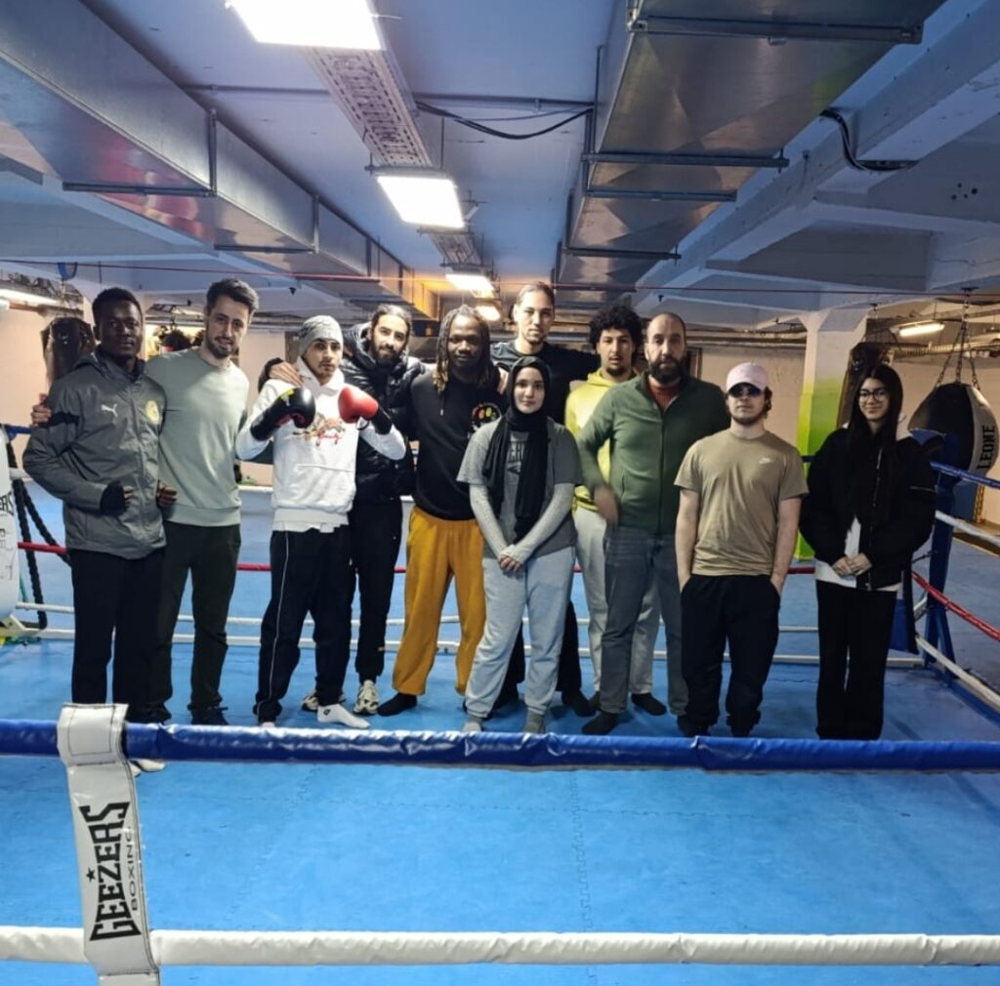
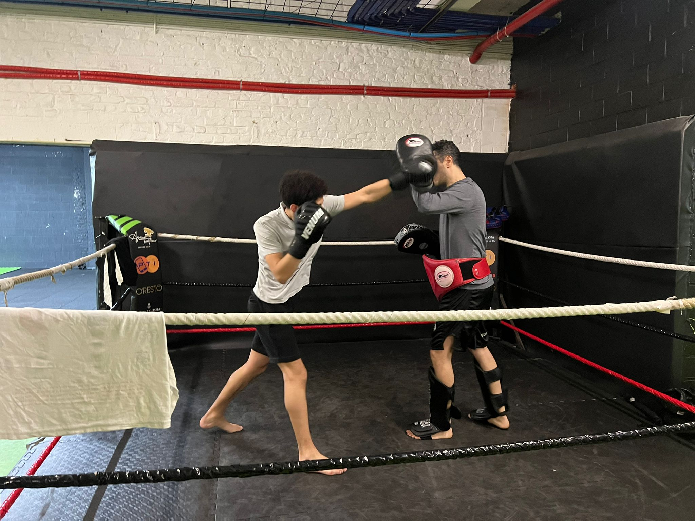
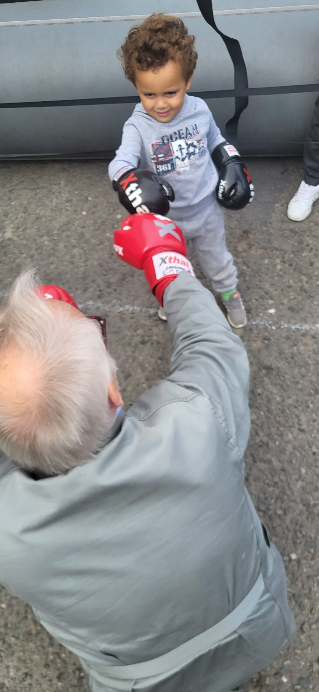
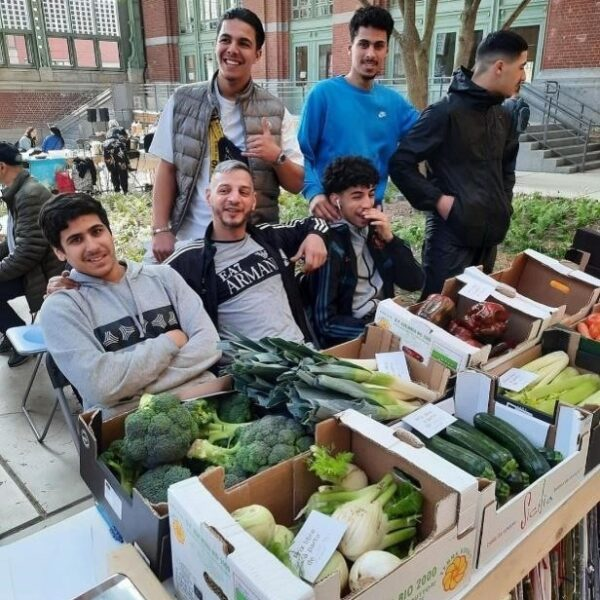
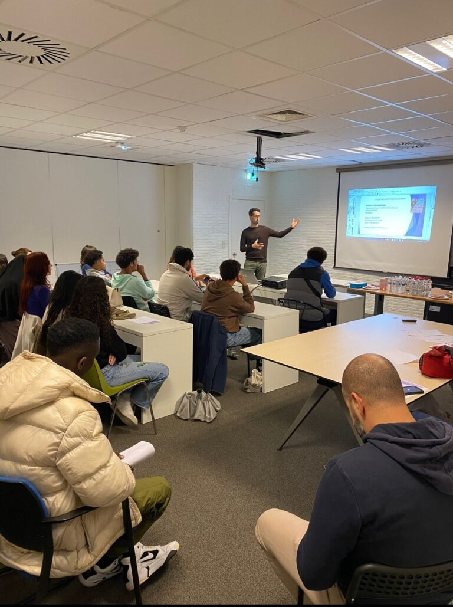

Jeunesse & coopération
Sport et Talent : Capital ASBL et La Team Marco unissent leurs forces pour l’avenir des jeunes
Une coopération au service de l’avenir des jeunes, portée par Capital ASBL et La Team Marco.
Découvrir l’actionActions & coopérations
Découvrez les initiatives, rencontres et coopérations présentées par Équilibre Vital autour du sport, de la jeunesse, de l’emploi et de l’inclusion à Bruxelles.
À la une

Jeunesse & coopération
Une coopération au service de l’avenir des jeunes, portée par Capital ASBL et La Team Marco.
Découvrir l’actionPreuves terrain
Emploi & accompagnement
Un retour de terrain autour de l’accompagnement, du souffle et de la reprise de parcours.
Découvrir l’action
Jeunesse & parcours
Une action au croisement de l’épanouissement personnel, de la jeunesse et du projet professionnel.
Découvrir l’action
Sport & inclusion
Une initiative qui place l’accessibilité et la dimension sociale du sport au premier plan.
Découvrir l’action
Initiative locale
Une présentation d’une action locale liée à l’aide logistique urbaine.
Découvrir l’action
Jeunesse & rencontre
Une rencontre entre jeunes et acteurs bruxellois autour du sport, de l’insertion et de la coopération.
Découvrir l’actionLien social & cultures
Une initiative consacrée aux liens entre générations et cultures à Anderlecht.
Découvrir l’actionActeurs du terrain
Retrouvez les partenaires et structures cités ou présentés dans les initiatives du site.